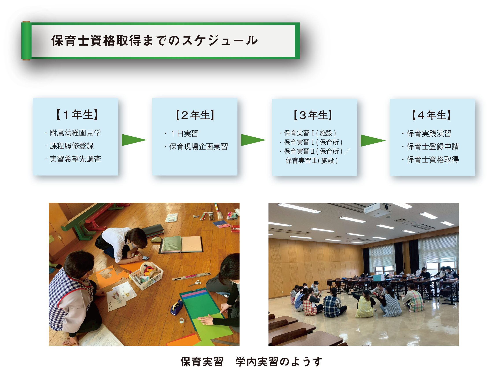

こどもの未来を育てる 保育士とは
保育士資格は、児童福祉法に基づいた国家資格で、子どもの保育や保護者への保育に関する指導を行うことを業とするために必要な資格です。
専門的な知識や技術をもって、乳児から小学校入学前の子どもたちを預かり、生活のお世話をしながら、基本的な生活習慣を身につけさせ、心身の発達を促し、社会性を養う重要な役割を担っています。
保育士資格取得後、保育士登録することで、保育士として働くことができます。保育士資格で働ける職場は、〔保育園〕〔認定こども園〕〔児童福祉施設〕〔企業内・病院内保育所〕〔地域の子育て支援施設〕等‥多岐にわたります。
一生ものの資格ですので、一度保育士の仕事から離れても、取り直しの必要がなく、資格を利用して再就職することができるので、生涯にわたって役に立つ資格です！
本学では幼稚園教諭一種免許状・小学校教諭一種免許状・保育士資格の３免許資格を卒業と同時に取得することができます。

（前期）
附属幼稚園において、幼児の様子や、保育の活動内容等を見学します。実際に子どもたちと手遊び等をして触れ合うことで、実際の保育現場を学びます。
（後期）
教職(幼・小)課程・保育課程の履修手続きを指定の期日内に行います。
（前期）
保育実習・教育実習に向けて、基礎的な知識や技能等を主に学んでいきます。夏季休業
期間中には、実習を希望する保育園へ訪問に行き、実習に向けた準備を進めていきます。
（後期）
学生主体で企画・運営を行う『保育現場企画実習』を通して、３年次で実施する保育実
習に向けて基礎を学び、知識・技術を習得します。
一年を通して、10日間×３回の保育実習を実施します。２月期は、保育所実習もしくは福祉施設実習どちらかを選択します。
・５月期：保育実習Ⅰ：福祉施設（10日間）
・９月期：保育実習Ⅰ：保育所（10日間）
・２月期：保育実習Ⅱ：保育所（10日間） or 保育実習Ⅲ：福祉施設（10日間）
保育実習指導(講義)のなかで、実習事前指導として、保育に関する講義や演習等での学習を基礎としながら、学内での講義や視聴覚教材等を用いた演習等を行います。
実習終了後には、事後指導として、実習の反省や総括等を行い、さらなる自己学習へとつなげていきます。
保育実践演習(講義)を通して、保育現場における保育者の役割の理解を深め、具体的な対応能力を身につけます。
保育園・こども園・幼稚園・児童養護施設・鹿児島県社会福祉事業団・その他‥
※保育士養成課程の詳細については、履修要項をご確認ください。
履修要項（大学情報）
top